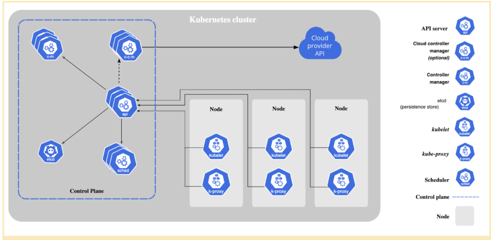
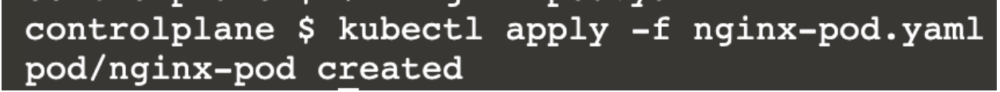
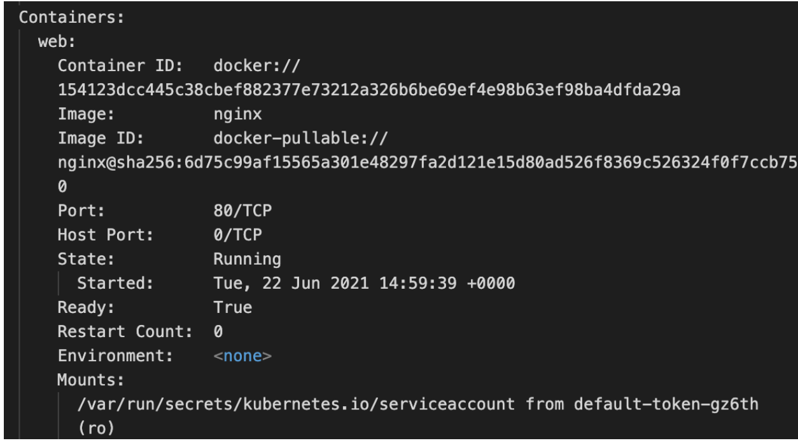
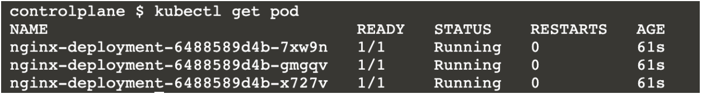
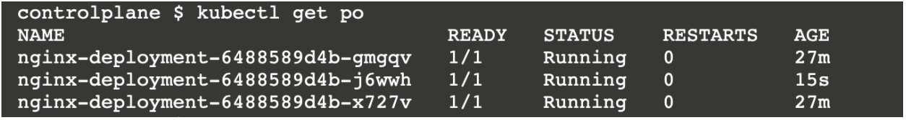
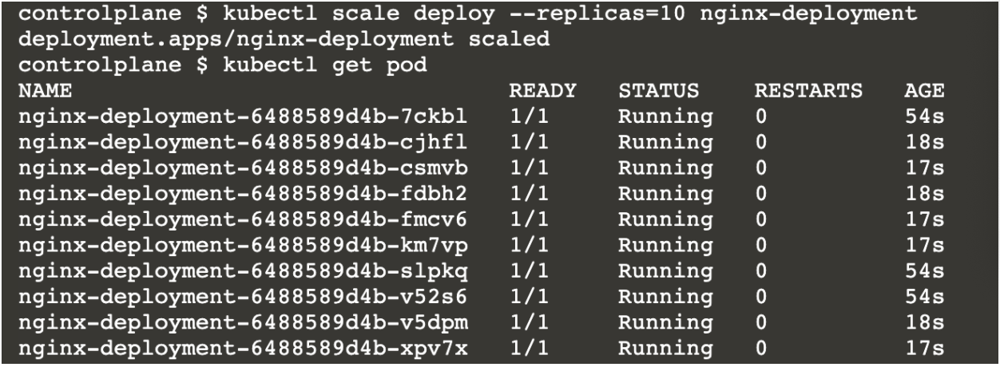

Kubernetes 編排
介紹
現在，我們終於來到了最令人期待的部分：大規模運行和管理容器。到目前為止，我們已經看到 Docker 如何便利容器的生命週期管理並提升應用程式的可攜性。Docker 確實提供了一個解決方案來簡化大規模容器部署（如果有興趣，可以查看 Docker Swarm），它與 Docker 容器整合良好。然而，Kubernetes 已經成為在大型分散式環境中編排管理微服務（以容器形式）的事實標準工具。
讓我們看看對我們 SRE 們來說，使用容器編排工具，特別是 Kubernetes 的重點。
使用 Kubernetes 的動機
- 易用性
雖然 Kubernetes 學習曲線較陡，但一旦學會，就可以作為一站式工具來管理微服務。只需一行命令，即可部署完整的、具備生產條件的環境。應用程式的期望狀態需以 YAML 清單紀錄，而 Kubernetes 會為你管理應用。
- 確保資源最佳化利用
我們可以對每個部署中的容器使用的資源設置限制，也可以指定 Kubernetes 部署節點的篩選條件（例如，CPU 使用率高的微服務可指示部署在計算能力強的節點上）。
- 容錯能力
Kubernetes 基本資源類型內建自我修復功能，不須從零設計容錯系統，特別適用於無狀態應用。
- 基礎設施無關性
Kubernetes 不綁定供應商，可在多種雲端環境或內部資料中心設置。
- 強大的社群支持和文件
Kubernetes 是開源的，社群已打造多項技術，如 operators、service mesh 等，用以更好地管理與監控 Kubernetes 編排的應用。
- 可擴充與自訂
我們可以建立符合需求的自訂資源定義，並使用 Kubernetes（搭配自訂控制器）來管理。
如想深入了解，請參考這篇文章。
Kubernetes 架構
以下是來自官方 Kubernetes 文件的示意圖，包含 Kubernetes 運作所依賴的各組件：

Kubernetes 組件可分成兩個部分：控制平面組件與資料平面組件。
Kubernetes 叢集由 1 台或多台主機（稱為節點）組成，容器在此被 Kubernetes 管理與執行，這構成資料平面（或節點平面）。
Kubernetes 的大腦是控制平面，負責回應節點平面事件（如建立 pod、調整副本數）並做主要編排。所有控制平面組件通常安裝於主節點，該節點不執行任何用戶容器。
Kubernetes 組件本身皆以容器形式包裝在 Pods 中（Pods 是 Kubernetes 最基本的資源物件）。
- 控制平面組件：
- kube-apiserver
- etcd
- kube-scheduler
- kube-controller-manager
- 節點平面組件：
- kubelet
- kube-proxy
以下的工作流程有助於你更好理解組件運作：
-
SRE 在本機安裝
kubectl，這是與 Kubernetes 控制平面（也就是叢集）互動的客戶端。 -
SRE 建立 YAML 檔案，稱為清單(manifest)，指定所需的資源狀態（例如，名為 “frontend” 的部署需要 3 個 Pod 始終運行）。
-
當下達基於該 YAML 檔案建立物件的指令時，kubectl CLI 會向
kube-apiserver發送 REST API 請求。 -
若清單有效，該狀態將以鍵值對形式儲存於控制平面的
etcd伺服器。 -
kube-scheduler選擇要將容器分配到哪些節點（也就是進行排程）。 -
由
kube-controller-manager管理的控制器流程確保叢集的當前狀態與所需狀態一致（例如，確保 3 個 Pod 都在運行）。 -
在節點平面端，
kubelet確保本地的 Pods 保持運行狀態。
實驗室
先決條件
開始練習的最佳方式是使用Play with Kubernetes 實驗室。
該環境在 4 小時後會自動清除。若想繼續使用，請務必先保存你的檔案。若要建立持久化的 Kubernetes 叢集，可以在本地安裝（使用 minikube）或在 Azure、GCP 或其他雲端供應商建立Kubernetes 叢集。
了解 YAML 會有助於理解清單檔。
實作練習
實驗室 1：
我們將建立一個稱作 Pod 的物件，Pod 是 Kubernetes 執行容器的最基本單位。這裡，我們將建立一個名為 ‘nginx-pod’ 的 Pod，內含一個名為 “web” 的 nginx 容器，同時開放容器的 80 端口供互動使用。
請將以下的清單儲存為 nginx-pod.yaml：
apiVersion: v1 #[1]
kind: Pod #[2]
metadata: #[3]
name: nginx-pod #[4]
labels: #[5]
app: nginx
spec: #[6]
containers: #[7]
- name: web #[8]
image: nginx #[9]
ports: #[10]
- name: web #[11]
containerPort: 80 #[12]
protocol: TCP #[13]
簡要說明：
#[2]- kind：指定建立物件的種類，這裡是 Pod。#[1]- apiVersion：該 Pod 資源的 API 版本，版本差異可能引起 YAML 格式細微改變。#[3]- metadata：檔案的元資料區段，包含 Pod 名稱與標籤。#[6]- spec：主要定義 Pod 內部內容。
這些並非隨意的鍵值對！必須為 kube-apiserver 可辨識。可用 kubectl explain pod 查看各鍵是否為必要或可選。歡迎實驗看看！
- 使用指令
kubectl apply -f nginx-pod.yaml來套用清單，於 Kubernetes 叢集中建立 “nginx-pod”。

- 確認 Pod 狀態為 Running，使用
kubectl get pod。
顯示 nginx-pod 處於 Running 狀態。1/1 表示一個容器中全部容器健康。
- 若想查看 nginx-pod 中執行的容器確實叫做 “web”，請執行
kubectl describe pod/nginx-pod。此指令輸出詳細的 Pod 描述及自建立以來的事件，對除錯十分重要。關鍵部分如下：

可看到 Containers 區段下名稱為 “web”，映像檔為 nginx。
- 如何存取 nginx “web” 容器的歡迎頁？可在描述中找到 Pod IP。每個 Pod 建立時會分配 IP。
此例為 10.244.1.3。
-
從主機執行
curl 10.244.1.3:80，即可取得歡迎頁！ -
若想使用指定 nginx 版本標籤（例如 1.20.1）取代同一 Pod，編輯 nginx-pod.yaml 中
#[9]行為image: nginx:1.20.1，再重新套用。系統會在同一 Pod 內建立新容器映像。
注意，容器在 Pod 內新增，但 Pod 是同一個物件。可透過 describe 查看 Pod 起始時間驗證，應該顯示較早時間。
若要修改 1000 個 nginx Pods 的映像為 1.20.1，或同時創建 1000 個 nginx Pods，當然可以寫腳本，但 Kubernetes 提供了稱為 “deployment” 的資源類型，更方便管理大量部署。
實驗室 2：
讓我們更進一步，了解如何同時建立多個 nginx Pod。
- 將以下清單儲存為 nginx-deploy.yaml：
apiVersion: apps/v1
kind: Deployment #[1]
metadata:
name: nginx-deployment
labels:
app: nginx
spec:
replicas: 3 #[2]
selector:
matchLabels:
app: nginx #[3]
template: #[4]
metadata:
labels:
app: nginx #[5]
spec:
containers:
- name: web
image: nginx
ports:
- name: web
containerPort: 80
protocol: "TCP"
你會發現它與 Pod 定義相似，直到 spec 部分（#[1] 指定為 Deployment，API 版本也不同）。注意 #[4] 下的元資料和規格與實驗室 1 中 Pod 的對應部分幾乎一樣（可回頭確認），意味著我們正部署三個與實驗室 1 類似的 nginx Pods。
matchLabels 中的標籤須與 #[4] 下的標籤一致。
- 執行：
kubectl apply -f nginx-deploy.yaml。
確認三個 Pod 確實被建立。

若有興趣，可查看 kubectl get deploy 與 kubectl describe deploy nginx-deployment。
- 使用
kubectl delete pod <pod 名稱>刪除其中一個 Pod，數秒後再執行kubectl get pod。

你會看到 Kubernetes 自動產生新的 Pod，以維持三個 Pod 的副本數（AGE 為 15 秒，較其他 27 分鐘前創建的 Pod 新）。這展示了 Kubernetes 的容錯能力。
（同樣，Lab 1 中的單一 Pod 被刪除則不會自動重建，因為沒有 Deployment 管理！）
- 想要將 Pod 數量增加到 10，可嘗試執行：
kubectl scale deploy --replicas=10 nginx-deployment。

你會看到 3/10 是較舊 Pod，Kubernetes 新增 7 個以擴展部署。這說明了 Kubernetes 擴縮容器的簡易性。
- 接著，將這些 Pod 組成一個 ClusterIP 服務。執行：
kubectl expose deployment nginx-deployment --name=nginx-service。
使用 curl 對應 10.96.114.184 執行請求，將會輪詢分配到 “nginx-deployment” 中的 10 個 Pod 之一。透過 expose 指令，Kubernetes 建立了一個型態為 ClusterIP 的 Service，讓多個 Pod 可以透過單一內部 IP 被訪問。
也可建立型態為 LoadBalancer 的 Service 以取得公開 IP（類似外部負載均衡器），歡迎嘗試。
以上練習已是使用 Kubernetes 管理大規模部署的基礎示例。操作 1000 個部署與容器的流程也極為相似。若要管理無狀態應用，Deployment 已足夠，但 Kubernetes 也提供 Job、Daemonset、CronJob、Statefulset 等資源以應對特殊需求。
額外實驗室：
https://kubernetes.courselabs.co/ （大量免費跟隨練習，深入體驗 Kubernetes）
進階主題
在多數情況下，以 Kubernetes 編排的微服務包含數十個 Deployment、Service 與 Config 等資源。這些應用的清單可用 Helm 範本自動生成，並打包成 Helm Charts。類似 Python 的 PyPi，遠端倉庫如 Bitnami 提供大量 Helm Charts（比如一鍵部署生產級 Prometheus 或 Kafka），可直接下載使用。這裡是入門好起點。
Kubernetes 也允許建立自訂資源（類似我們看到的 Deployment 或 Pod）。舉例，若你想建立五個名為 SchoolOfSre 的自訂資源實例，完全可行！但你需要撰寫自訂資源定義。此外，也可打造自訂 Operator 來對資源實例執行特定動作。更多資訊請參考這裡。